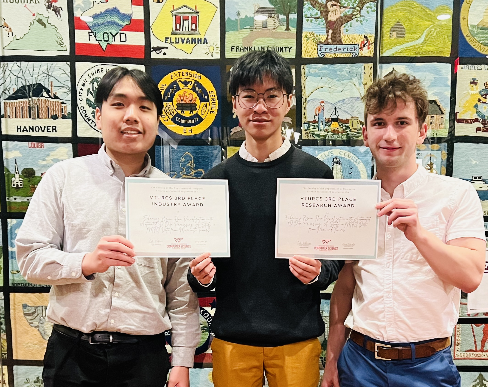
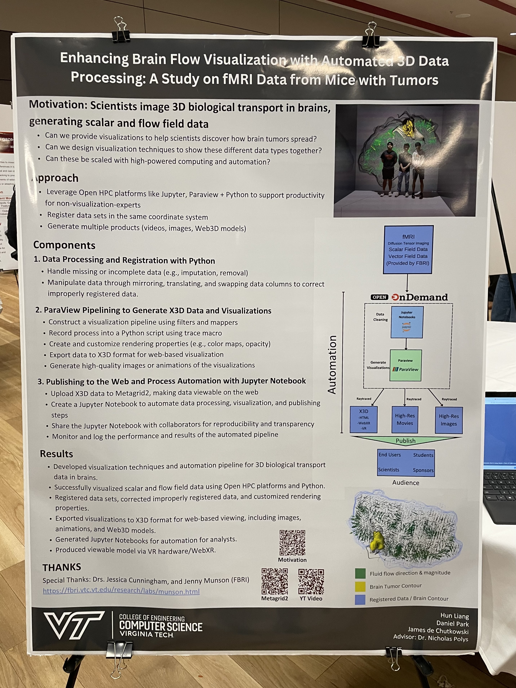

Education
Coursework: Deep Learning, Machine Learning, Info. Visualization, AI in Software Delivery, Social Media Analytics
Certifications: CFA Level 1 Candidate
Experience
- Built a personalized crypto news aggregation engine using Go, PostgreSQL, Redis, and Next.js that prioritizes relevant content based on user watchlists, tagging key sentiment shifts and market trends through RESTful APIs and WebSocket connections.
- Implemented advanced topic modeling algorithms (LDALatent Dirichlet Allocation — a generative probabilistic model that represents each document as a mixture of latent topics, where each topic is itself a distribution over words., BERTopic) with Python, scikit-learn, and Hugging Face Transformers, to extract underlying themes from crypto news sources, enabling users to discover hidden market narratives and interconnected industry developments.
- Developed predictive time-series forecasting using frameworks like NeuralProphetNeuralProphet — a PyTorch-based hybrid forecasting library that extends Facebook Prophet by combining classical decomposition (trend, seasonality, autoregression) with neural network components for richer time-series modeling. that track sentiment momentum patterns and their price trajectories, achieving 78% directional accuracy on select tokens.
- Prototyped microservice deployment pipeline (Docker, AWS EKS, Terraform), which reduced deployment time by ~65% and improved system scalability and was eventually adopted by several teams.
- Integrated Big Bang 2.0 Helm chart for deploying DoD-hardened packages into a Kubernetes cluster, and streamlined pre-deployment compliance checklist with NIST 800-171 security standard.
- Simulated disaster recovery for the Kubernetes cluster, reduced recovery timeframe by 4 hours and remediated 95% of critical security vulnerabilities within 48-hour SLA in canary.

- Developed metadata-augmented RAG system with Prof. Naren Ramakrishnan for financial document question-answering, processing SEC 10-K/10-Q filings using ChromaDB vector database and OpenAI embeddings with Azure deployment.
- Engineered document preprocessing pipeline with tiktoken-based chunking and metadata extraction, enabling filtered retrieval by company name and fiscal year through ChromaDB's persistent storage.
- Implemented ground truth generation pipeline using GPT-4o for automated annotation of financial analytics queries, creating evaluation datasets with citation-based answer verification.
- Implemented new techniques for scientific visualizations with HTML5/X3D in ParaView and Castle Game Engine with Python – improved rendering performance by ~40% and reduced load times for complex 3D medical datasets. My work was critical to our industry partner Cairina Inc. winning a spot in the RAMP accelerator.
- Submitted "Enhancing Brain Flow Visualization with Automated 3D Data Processing: A Study on DCE-MRI Data from Mice with Tumors" paper to the ACM Web3D conference.
- Won 2023 VTURCS 3rd Place Research & 3rd Place Industry Awards within the Department of Computer Science at Virginia Tech annual research symposium.


Research & Projects
Network analysis of cryptocurrency exchange liquidity patterns using 18M Ethereum transactions. Analyzed CEX/DEX centralization risks through modularity detection, PageRank analysis, and power-law distribution modeling.
Built auto-decision-maker for college admissions using multi-layer perceptron with multi-modal features (numerical, categorical, textual). Achieved 58% overall accuracy and 72% admission accuracy on 12,000 undergraduate applications through feature engineering and ensemble methods.
Technical Skills
Languages: Go, Python, Java, Javascript, TypeScript, C/C++, HTML/CSS, SQL
Tools/Technologies: Git, PostgreSQL, MongoDB, AWS, Docker, Kubernetes, Typesense, Redis, PyTorch, Keras
Community & Leadership
- Founded and grew Discord-partnered community server to active membership (5/5 rating on Disboard)
- Managed community events/recitals, moderation, and engagement initiatives